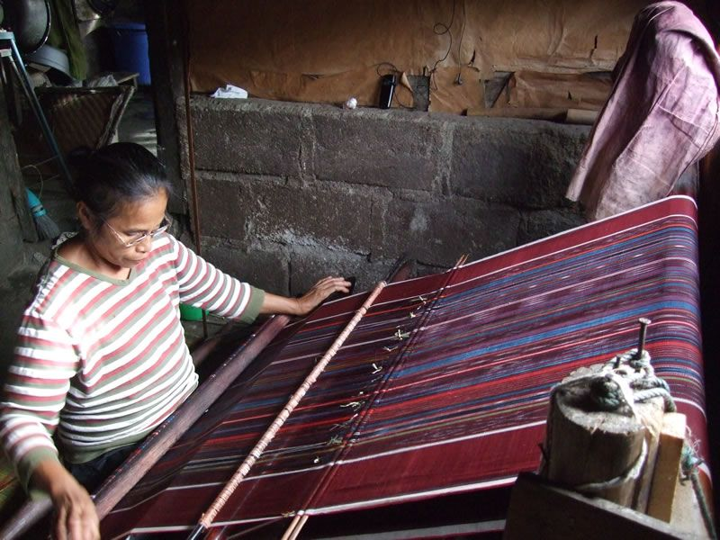

Esensi Samosir
Jantung Budaya Batak

Arsitektur
Rumah Bolon
Arsitektur tradisional megah tanpa paku dengan atap pelana tinggi dan ukiran Gorga tiga warna yang sarat makna spiritual perlindungan kehidupan.

Kain Tradisional
Kain Tenun Ulos
Simbol utama kekerabatan Batak. Diberikan sebagai media penyalur berkat, doa, dan kehangatan kasih sayang dalam siklus kehidupan manusia.

Masyarakat
Dalihan Na Tolu
Filosofi "tungku tiga batu" yang mengatur sistem sosial kekerabatan masyarakat Batak Toba untuk menciptakan harmoni, saling menghormati, dan gotong royong.